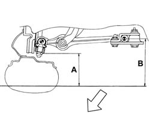
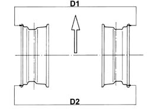
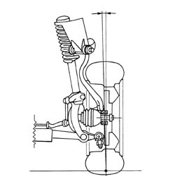
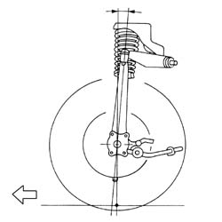
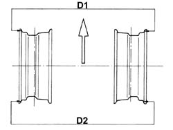
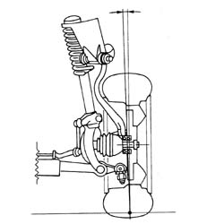

4450A10 front wheel geometry - check using optical equipment - includes front wheel tow-in adjustment if necessary
- Path
- Procedures > 44 SUSPENSION AND WHEELS > 4450 WHEELS AND HUBS > 4450A wheel geometry > 4450A10 front wheel geometry - check using optical equipment - includes front wheel tow-in adjustment if necessary
- Kind
- repair procedure (removal / refitting; the operation number is the code)
- Applies to
- all engines; all production periods
- Interactive page
- https://sloeber94.github.io/elrnDB-a156/en/#/3238217
Applies to: all engines; all production periods
Check that, with the vehicle unladen and all tanks and reservoirs filled, the front alignment is within the recommended limits.
 | Measurement | Value | |
|---|---|---|---|
- | B - A (mm) | 62.6 +/-7 | |
Class A | |||
(Unladen vehicle filled with fluids) (-) | - | ||
On vehicles with sports packs, check that, with the vehicle unladen and all tanks and reservoirs filled, the front alignment is within the recommended limits.
| Measurement | Value | |
|---|---|---|---|
- | B - A (mm) | With sports kit | 38.9 +/- 7 |
(Unladen vehicle filled with fluids) (-) | - | ||

Applies to: all engines; all production periods
The front wheel toe in figures, for an unladen vehicle with all tanks and reservoirs filled, are given in the table.
| Measurement | Value | |
|---|---|---|---|
- | D1 - D2 (mm) | 2.00 ± 1 | |
Class A | |||
(Unladen vehicle filled with fluids) (-) | - | ||
The front wheel toe in figures, for vehicles with sports packes, with the vehicle unladen and all tanks and reservoirs filled, are given in the table.
| Measurement | Value | |
|---|---|---|---|
- | D1 - D2 (mm) | With sports kit | 2.07 +/- 1 |
(Unladen vehicle filled with fluids) (-) | - | ||

Applies to: all engines; all production periods
The front wheel camber figures, which cannot be adjusted, for an unladen vehicle with all tanks and reservoirs filled, are given in the table.
| Measurement | Value | |
|---|---|---|---|
- | Front wheel camber (g/s) | Class A | 0°41' +/- 20' |
The front wheel camber figures, which cannot be adjusted, for vehicles with sports packs, for an unladen vehicle with all tanks and reservoirs filled, are given in the table.
| Measurement | Value | |
|---|---|---|---|
- | With sports kit, Standard A (g/s) | Class A | |
-1° 7' +/- 20' |

Applies to: all engines; all production periods
The front wheel caster figures, which cannot be adjusted, for an unladen vehicle with all tanks and reservoirs filled, are given the in table.
| Measurement | Value | |
|---|---|---|---|
- | - (-) | 3° 55' ± 30? | |
(Unladen vehicle filled with fluids) (-) | - | ||
The front wheel caster figures, which cannot be adjusted, for vehicles with sports packs, for an unladen vehicle with all tanks and reservoirs filled, are given in the table.
| Measurement | Value | |
|---|---|---|---|
- | - (-) | Class A | |
With sports kit | 4°3' +/- 30' | ||
(Unladen vehicle filled with fluids) (-) | - | ||

Applies to: engines: 3.2 V6; all production periods
Check that, with the vehicle unladen and all tanks and reservoirs filled, the front alignment is within the recommended limits.
| Measurement | Value | |
|---|---|---|---|
- | Standard A (mm) | Class A | 35 +/- 7 |
Applies to: engines: 3.2 V6; all production periods
The front wheel toe in figures, for an unladen vehicle with all tanks and reservoirs filled, are given in the table.
| Measurement | Value | |
|---|---|---|---|
- | Standard A (mm) | Class A | 2.67 +/- 1 |

Applies to: engines: 3.2 V6; all production periods
The front wheel camber figures, which cannot be adjusted, for an unladen vehicle with all tanks and reservoirs filled, are given in the table.
| Measurement | Value | |
|---|---|---|---|
- | Unladen vehicle filled with fluids) () | Class A | -0° 26' +/- 20' |

Applies to: engines: 3.2 V6; all production periods
The front wheel caster figures, which cannot be adjusted, for an unladen vehicle with all tanks and reservoirs filled, are given in the table.
| Measurement | Value | |
|---|---|---|---|
- | Unladen vehicle filled with fluids) () | Class A | 4° 7' +/- 30' |
Topics that link to this page (9)
- 4450A wheel geometry
- H01 VEHICLE DRIFT
- H12 STEERING TOO SENSITIVE
- X50 TYRE WEAR
- 4410A12 front suspension damper (one), lh or rh - for mcpherson strut system - includes dismantling/re-building of assembly at bench r r
- 4410A80 damper lower fork - r r
- 4410D13 front suspension beam - r r
- 4450C32 one front wheel hub bearing, lh or rh - replace
- 4450C38 front wheel hub bearings (lh and rh) - replace